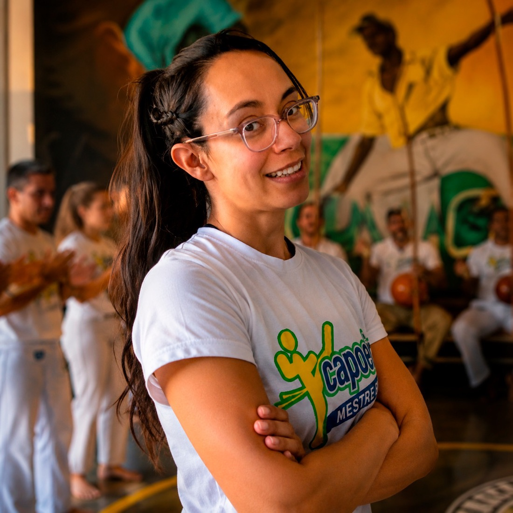

Instructora Palito
Toluca, Edo. Mexico, Mexico
Biografía
Tania Rueda Alarcón es mercadóloga de carrera pero capoeirista de corazón; mejor conocida en la capoeira como Instructora Palito. Comenzó a entrenar en 2009 en el grupo Muzenza con Mestre Madona, a quien siguió cuando él fundó el Centro Esportivo Cultural Pura Capoeira.
Fue participante activa y sobresaliente en diversas competencias, incluido un primer lugar en un campeonato mundial en Brasil. Cuenta con varias certificaciones que la avalan como instructora y ha participado en infinidad de encuentros y clases con diversos maestros.
Impartió clases a niños de 2011 a 2020, a jóvenes y adultos de 2016 en adelante y, desde 2013, a adultos mayores, espacio en el que creó su marca de Capoeira Adaptada. Con ella formó un grupo estable que participó en los eventos y encuentros de capoeira que organizaba, además de realizar presentaciones culturales; lamentablemente, durante la pandemia de 2020 el grupo se desintegró.
En 2025 se embarazó y creó un curso online de Capoeira Prenatal, que proyecta lanzar en 2026 una vez terminada la edición de los videos y la creación de la plataforma.
Trayectoria
Su camino en la capoeira inició en 2009 dentro del grupo Muzenza, en Toluca, bajo la guía de Mestre Madona. Pocos años después comenzó a enseñar, combinando la práctica competitiva con una intensa labor docente en escuelas, casas de cultura, academias y espacios comunitarios del Estado de México.
Su trabajo con adultos mayores la llevó a desarrollar la Capoeira Adaptada, un enfoque pedagógico centrado en la inclusión, el acondicionamiento físico y el bienestar. Hoy proyecta esa misma sensibilidad hacia la capoeira prenatal, llevando el arte a nuevas etapas de la vida.
Competencias destacadas
Primer lugar
- Acampoeira — Femenil, avanzado · Orizaba, Veracruz2024
- 7º Campeonato Mundial Muzenza — Femenil, 4º grado · Río de Janeiro, Brasil2013
- 4ª Copa Mexicana de Capoeira — Femenil, 4º grado · Ciudad de México2012
- 3ª Copa Mexicana de Capoeira — Femenil, 3º grado · Ciudad de México2011
- Competencia Interna Muzenza — Femenil, intermedio · Toluca, Edomex2011
Segundo lugar
- 2º Torneo de Capoeira — Mixto, avanzado · Toluca, Edomex2014
Tercer lugar
- 5ª Copa Mexicana de Capoeira — Mixto, graduados y monitores · Toluca, Edomex2016
- 4º Torneo de Capoeira — Mixto, avanzado · Toluca, Edomex2016
- Encuentro Internacional y Torneo de Capoeira Grupo Males — Mixto, avanzado · Guadalajara, Jalisco2015
Certificaciones
- Profesorado como Instructora de Capoeira — C.E.C. Pura Capoeira2022
- Instructores de Capoeira — SEP, CPLED, INDEPORTE2018
- Capoterapia — Asociación Brasileña de Capoterapia2014
- Entrenador Físico Deportivo en Acondicionamiento Físico General — ITPF2013
- SICCED Nivel 1 y 2 — ITPF2013
- Crossfit — ITPF2013
Experiencia docente
- Curso Online de Capoeira Adaptada al Embarazo2025
- Jóvenes y adultos — clases en casa2021-2025
- Adultos mayores — por Zoom2020
- Niños de 3 a 12 años — Sports World Metepec2017-2020
- Niños, jóvenes y adultos — Casa de Cultura de Santiago Tianguistenco2016-2020
- Niños de maternal a primaria — Preschoolers by IBIT2016
- Niños de 4 a 10 años — Academia Pura Capoeira Toluca2015-2017
- Adultos mayores — Casa de Día de Metepec2014-2020
- Adultos mayores — Clínica Geriátrica de Metepec2013-2014
- Niños de 5 a 14 años — Villa Hogar del DIF, Toluca2013-2014
- Niños de 6 a 11 años — Academia Muzenza Toluca2012
- Niños de 5 a 12 años — Lerma, Edomex2011